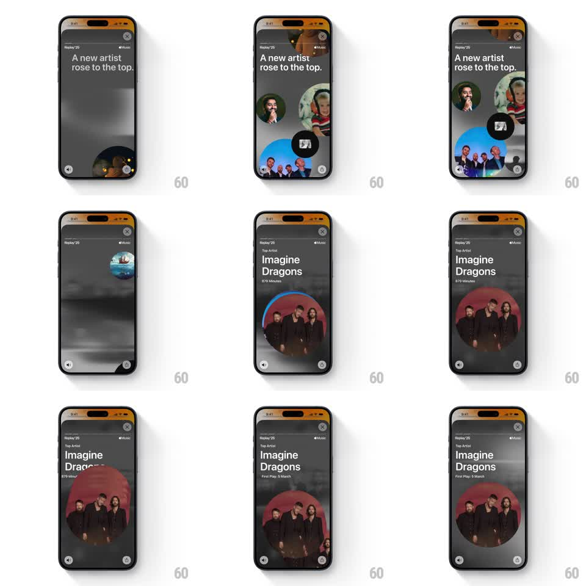

Media
Frame-by-frame

Rebuild this animation 1:1: Apple Music Replay '25 top-artist story - circular artist bubbles float up and cluster under "A new artist rose to the top.", then disperse as the winning artist's bubble scales into a large hero circle with "Top Artist" stats.

Rebuild this animation 1:1: Apple Music Replay '25 top-artist story - circular artist bubbles float up and cluster under "A new artist rose to the top.", then disperse as the winning artist's bubble scales into a large hero circle with "Top Artist" stats. ## Integration Integration: stack-agnostic spec - springs given as stiffness/damping, timed motions as duration + curve; map every value to your framework and animation library of choice. ## Scene Dark gray, smoky story screen with Replay '25 chrome. Phase 1: headline "A new artist rose to the top." while circular artist photo bubbles (~6, 60-140px) rise from the bottom edge and gather mid-screen, overlapping. Phase 2: the bubbles spread apart and recede; one bubble (the top artist) stays center. Phase 3: that bubble scales into a large hero circle (~60% width) with a thin progress-ring accent, under a "Top Artist" label, artist name, total minutes, and a "First Play: <date>" line. ## Motion spec Pattern: bubble cluster, disperse, hero scale, ~4s. - Rise: bubbles enter from below at staggered x positions (spring ~240/20 each, 100ms cadence), overshooting slightly before settling into the cluster. - Idle: cluster floats with gentle independent drift (8-14px, 3s periods). - Disperse: non-winning bubbles scale to ~0.4 and fade while drifting outward (400ms, ease-in). - Hero: the winning bubble scales 3-4x to its hero slot (spring ~260/18); a ring accent sweeps around it (600ms, ease-out); label, name, minutes, and first-play date fade/slide up (300ms, 70ms stagger). ## Calibration - Bubbles are perfect circles with cropped photos - no rounded squares. - The hero bubble must be one of the cluster bubbles; never swap in a separate image. ## Reduced motion Bubbles fade in clustered (250ms), then cross-fade to the hero layout (300ms). ## Don't miss - The background stays dark and smoky across all phases - the contrast makes the photos pop. - Stats hierarchy: small caps "Top Artist" label, large two-line artist name, then minutes, then first-play date.